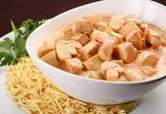

Estrogonofe de Frango

Estrogonofe de frango, receita inspirada no strogonoff russo mas feito do jeito brasileiro
Ingredientes
- 2 colheres (sopa) de margarina
- 600 g de filé de frango cortado em cubos pequenos
- 1 xícara (chá) de água fervente
- 2 colheres (sopa) de catchup
- 1/2 xícara (chá) de cogumelo em conserva cortado em fatias
- 1 cebola média picada
- 2 colheres (sopa) de extrato de tomate
- 1 colher (sopa) de molho inglês
- 1 colher (chá) de molho de mostarda
- 1 caixa (200 g) de creme de leite
Modo De Preparo
- Em uma panela, aqueça a margarina em fogo médio e frite a cebola por 3 minutos.
- unte o frango e refogue, mexendo às vezes, até dourar.
- Acrescente o extrato de tomate, a água, o molho inglês, o catchup, o molho de mostarda e o cogumelo, cozinhe em fogo médio até o frango ficar macio
- Junte o creme de leite e mexa até aquecer.
- Sirva em seguida
- Dica: Se preferir, substitua o cogumelo por palmito picado.
- Variação: Sirva com arroz branco e batata palha